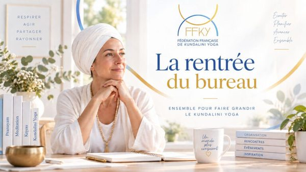
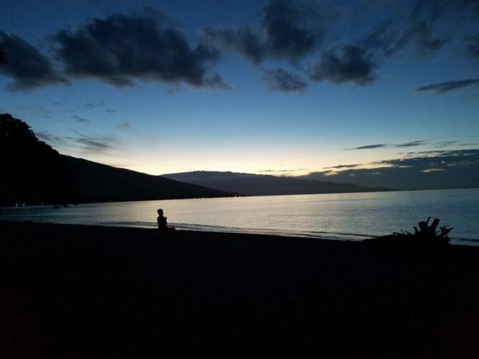
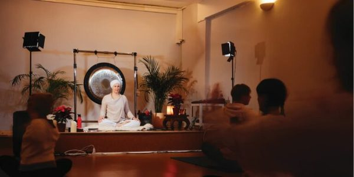
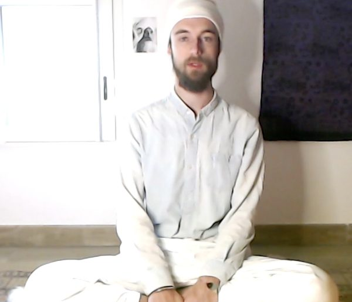
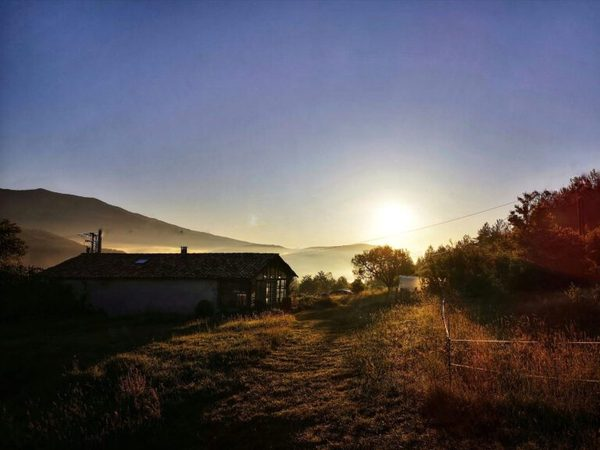
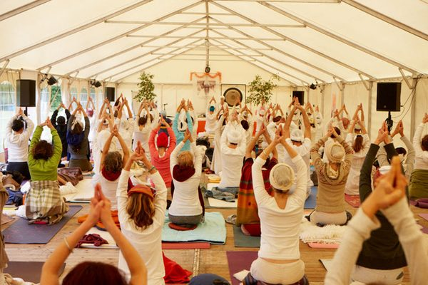
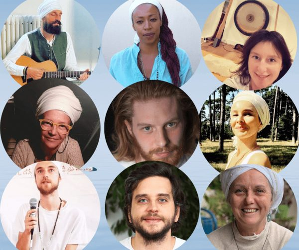
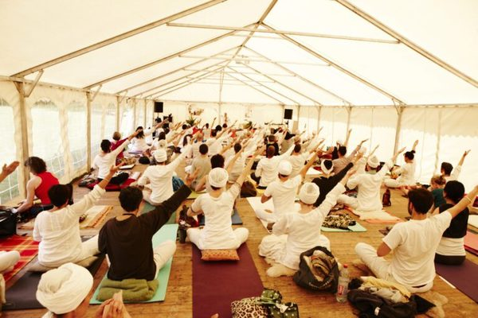
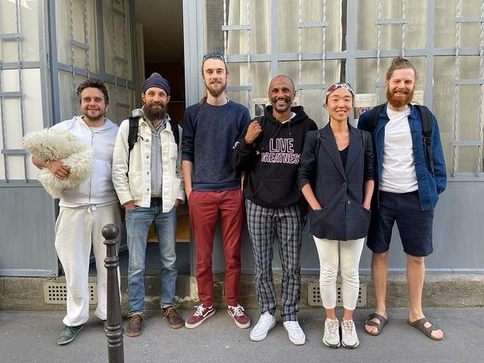
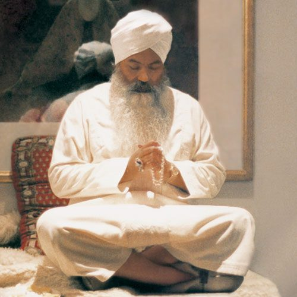

 Actualités
Actualités
La vie de la fédération
Nouvelles du bureau, témoignages, portraits, livres, recettes, rendez-vous : suivez la vitalité de la sangat.
Le nouveau site reprend l’ensemble des articles publiés sur ffky.fr : 77 articles, du plus récent au plus ancien, de 16 octobre 2026 à 19 février 2016.
Dans la maquette, chaque article s’ouvre sur ffky.fr. Dans le site final, les articles sont importés avec leurs images et leurs adresses.
Faire adhérer vos élèves : la décision de l’AG de mai
Lors de l’Assemblée Générale de mai, il a été voté de demander à l’ensemble des enseignant·es de faire adhérer leurs élèves à la FFKY. Cette adhésion de 5 € par an et par élève élargit notre communauté et permet à davantage de pratiquant·es de participer pleinement à la vie de la Fédération.
Articles 1 à 12 sur 77 · page 1 sur 7

1000 jours de pratique en Kundalini Yoga
Lire l’article : 1000 jours de pratique en Kundalini Yoga
Enseigner le Kundalini Yoga, c’est quoi ?
Lire l’article : Enseigner le Kundalini Yoga, c’est quoi ?
Comment faire correctement les flexions de la colonne ?
Lire l’article : Comment faire correctement les flexions de la colonne ?
L’agenda 2023 à l’ashram de La Fontaine
Lire l’article : L’agenda 2023 à l’ashram de La Fontaine
Des kriyas et méditations traduits en français, pour vous
Lire l’article : Des kriyas et méditations traduits en français, pour vous
Changement de présidence
Lire l’article : Changement de présidence
Convocation à l’Assemblée Générale 2022
Lire l’article : Convocation à l’Assemblée Générale 2022
Candidats à l’élection du bureau pour le mandat 2022-2024
Lire l’article : Candidats à l’élection du bureau pour le mandat 2022-2024
D’où vient le Kundalini Yoga de Yogi Bhajan ?
Lire l’article : D’où vient le Kundalini Yoga de Yogi Bhajan ?Retour du Printemps du Yoga
Lire l’article : Retour du Printemps du YogaMéditation collective pour la paix
Lire l’article : Méditation collective pour la paixSource : articles publiés sur ffky.fr (lecture publique du 27/11/2026).